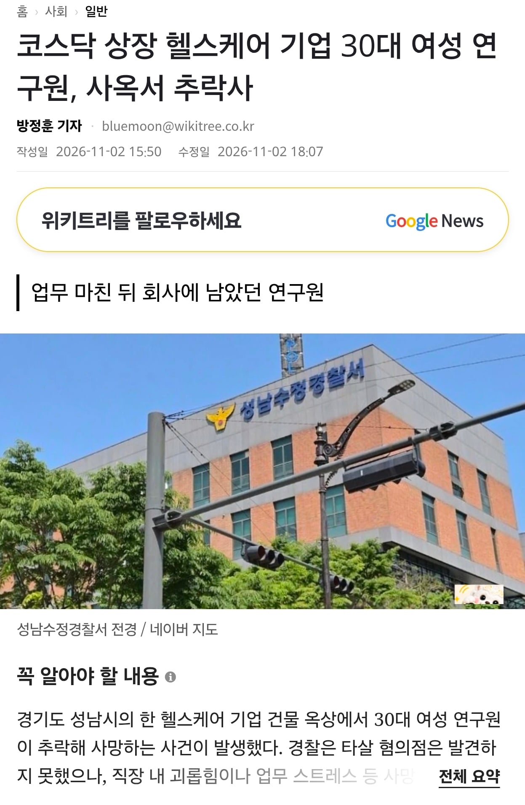

- 9월 30일 오후 8시 30분 무렵 경기도 성남시 수정구 소재 기업 건물 13층 옥상에서 30대 여성 A 씨가 추락했다.
- 사망한 A 씨는 해당 기업 소속 연구원으로, 당일 정규 업무를 마친 후 회사에 홀로 남아 있었다.
- 경찰의 초기 현장 감식과 CCTV 분석 결과 외부인 침입이나 물리적 충돌 등 타살 의심 정황은 발견되지 않았다.
- 경찰은 A 씨가 스스로 극단적인 선택을 했을 가능성에 무게를 두면서도 직장 내 괴롭힘 여부를 조사하고 있다.
- 경찰은 유족과 회사 동료, 사측 관계자들을 소환해 평소 업무 강도와 회사 생활을 조사할 방침이다.
https://www.wikitree.co.kr/articles/1171116
https://m.megaeconomy.co.kr/news/newsview.php?ncode=1065586108117322
세상에나...
에구....